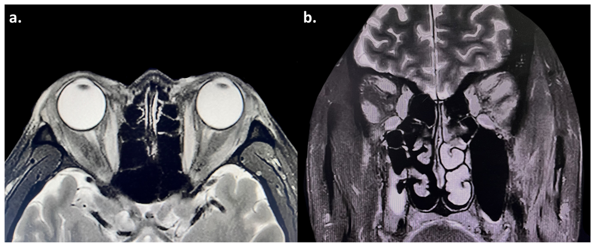

421 — Lồi mắt Graves / Thyroid eye disease (TED)
Tags: pattern:loi-mat vung:hoc-mat
Mức chắc chắn (certainty): tổng hợp y văn (literature synthesis) — nhóm tự biên từ y văn mở, chưa gắn ca nguyên văn đơn lẻ.
1. Tổng quan — cơ phì đại chừa gân + T2 sáng = hoạt tính
- TED: tự miễn thụ thể TSH → thâm nhiễm cơ vận nhãn + mỡ. TẠI SAO thân cơ to mà gân bình thường (tendon-sparing): viêm đầu cơ (belly), khác giả u/viêm lan cả gân.
- T2 sáng = viêm hoạt tính (đáp ứng steroid); T2 tối + xơ = mạn (mổ giảm áp/chỉnh lác). CAS ≥ 3/7 = hoạt tính (đau sau nhãn, đỏ mi/kết mạc, sưng mi, sưng caruncle).
- Ngưỡng: lồi (Hertel) chênh > 2 mm hoặc > 21 mm; TRAb/TSI (+) củng cố; giữ bình giáp (cả cường lẫn suy đều làm nặng mắt).
- Thứ tự cơ I'M SLOW: Graves to cơ theo thứ tự Inferior → Medial → Superior → Lateral → Oblique-W (chéo). Cơ trực ngoài (lateral rectus) to ĐƠN ĐỘC → chốt LOẠI TRỪ Graves, nghĩ giả u viêm/lymphoma/di căn.
2. Gamut lồi mắt + cơ to
- Graves/TED: 2 bên (lệch cũng có), thân cơ to chừa gân, T2 sáng, TRAb (+), tuyến giáp bệnh.
- Giả u viêm (pseudotumor): 1 bên, cả gân, đau nhiều, đáp ứng steroid nhanh.
- Cellulitis sau vách: sốt + viêm xoang kề + phù lan, trẻ em — kháng sinh, áp-xe dẫn lưu.
- Rò ĐM cảnh–xoang hang (CCF) giai đoạn muộn: lồi mắt + cơ vận nhãn to lan tỏa do ứ máu TM (không phải bệnh cơ) + TM mắt trên giãn, kết mạc đỏ; chốt bằng tiếng thổi + đổ đầy sớm xoang hang trên CTA/DSA (bài 423).
- U (lymphoma/meningioma): khối khu trú, không viêm, tiến triển chậm.
3. Bảng so sánh
| Thực thể (entity) | Hình ảnh điển hình (CT/MRI) | Chốt vào (rule-in) | Chốt loại (rule-out) | Gợi ý xác nhận |
|---|---|---|---|---|
| Graves/TED | Thân cơ to + gân thường, T2 sáng, 2 bên | Chừa gân + TRAb (+) + CAS ≥ 3 | Cả gân + đau dữ → giả u | TRAb, CAS, giữ bình giáp |
| Giả u viêm | Cả gân + cơ, 1 bên, đau | Đau + 1 bên + đáp ứng steroid 48h | Chừa gân 2 bên → Graves | Steroid thử + MRI |
| Cellulitis | Phù lan + xoang mờ + sốt | Sốt + viêm xoang kề + trẻ | Không sốt + mạn → TED/giả u | Kháng sinh TM, CT tìm áp-xe |
| Rò ĐM cảnh–xoang hang (CCF) | TM mắt trên giãn + cơ to lan tỏa + phù mỡ ổ mắt, thường 1 bên; CTA đổ đầy sớm xoang hang | Tiếng thổi + SOV giãn + đổ đầy sớm | Không tiếng thổi + chừa gân + TRAb (+) → TED | CTA/DSA + nút mạch |
| Đỉnh chèn ép | Cơ to chèn TK thị đỉnh + giảm thị lực | Giảm thị + RAPD + đỉnh đặc | Thị lực tốt → chưa chèn ép | Mổ giảm áp cấp cứu |
4. Protocol
- CT/MRI hốc mắt: đo cơ (thân/gân), T2 fatsat (hoạt tính), đỉnh (chèn ép), tuyến lệ.
- CAS mỗi lần khám (7 điểm); Hertel; thị lực + thị trường + RAPD (chèn ép).
- Điều trị theo hoạt tính: hoạt tính → steroid/ức chế miễn dịch (teprotumumab); mạn → mổ (giảm áp, lác, mi).
5. Cạm bẫy
- ICI (pembrolizumab/nivolumab) cũng gây lồi mắt giống Graves (kể cả bình giáp, TRAb âm) — hỏi thuốc ung thư.
- Giảm liều steroid sớm → tái phát (bệnh trong ca gốc tái khi giảm liều) — giảm dần + theo dõi TRAb.
- Suy giáp cũng làm nặng mắt — giữ bình giáp suốt quá trình, không chỉ chữa cường.
- CCF muộn giả TED: lồi mắt + cơ to lan tỏa do ứ máu TM, rất dễ chẩn đoán nhầm Graves — nghe tiếng thổi, tìm TM mắt trên giãn/đổ đầy sớm xoang hang; TED chừa gân + TRAb (+), CCF chốt bằng mạch máu (bài 423).
6. Tự lượng giá — Blind Quiz
Ca 1 — Nam 57 tuổi sau pembrolizumab, lồi 2 bên + đau + song thị. Đọc MRI.

- Hỏi: cơ nào to? Gân có to không? T2 sáng hay tối? CAS và chẩn đoán?
Bấm để hiện đáp án
- Phì đại nhiều cơ 2 bên (trong/trên/dưới/ngoài) + T2 sáng + chừa gân → Graves hoạt tính (CAS 5/7) sau pembrolizumab, TRAb (+). Điều trị: steroid + ức chế miễn dịch (thận trọng vì ung thư), giảm liều chậm.
- Nguồn: Pan et al., Diagnostics 2025 Fig. 2, CC BY 4.0.
Ca 2 — Đau mắt dữ 1 bên + cơ to cả gân + đáp ứng steroid 2 ngày: Graves hay giả u? (Bảng mục 3.)
Bấm để hiện đáp án
- Giả u viêm: 1 bên + cả gân + đau + đáp ứng nhanh — khác Graves (chừa gân, 2 bên, TRAb).
Bài liên quan chéo
- 400 – Tổng quan Mắt
- 410 – Giải phẫu hốc mắt (thân/gân cơ)
- 420 – Vỡ sàn hốc mắt (lồi mắt chấn thương)
- 423 – Fistula xoang hang (lồi mắt + cơ to do ứ máu TM)
Không dùng để chẩn đoán độc lập khi chưa có người hướng dẫn.